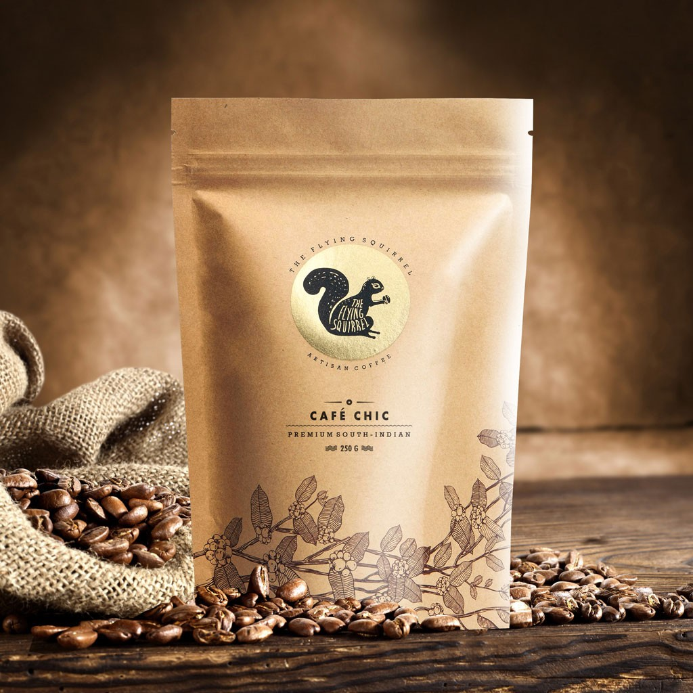
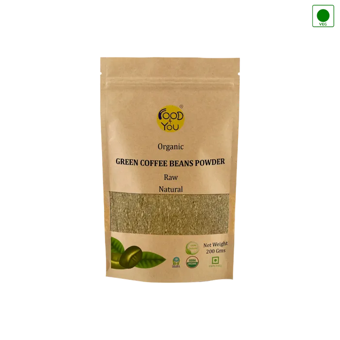

COFFEE

AROMATIQUE
wine-like Acidity,Mild Fruitness
Light Roast
80% wet Processed,20% Dry
Processed
$460

CAFE CHIC
Deep,Roasty, Heavy Body
Medium Dark Roast
Dry processed, Wet
Processed & Pulp Sun Dried
$340
CLOUD IN MY COFFEE
Intense, Woody, Spice notes
Monsoon Processed
$680

DEEP BLISS
Dark Chocolate, Earthy
Medium Dark Roast
Light, Flavourful
Unroasted
Wet Processed
Dry processed, Wet
Processed & Pulp Sun Dried
$400

ORGANIC COFFEE
Light, Flavourful
Unroasted
Wet Processed
Dark Chocolate, Earthy
Medium Dark Roast
Dry processed, Wet
Processed & Pulp Sun Dried
$620
PARAMA
Chocolate, Caramel
Medium Roast
$420

SUNKISSED
Fruity, Citrussy, Buttercup
$460
WE EMPLOYED NATURE.
THAT'S RIGHT!! NATURE WORKS FOR US
There is a secret we’d like to share with you about our coffee growing, the innovative methods we use and practices we follow. All of this
happens at our farm, what we like to refer to as ‘the-coffee-lab’, where humans, plants, birds & animals and insect species all live together in
prefect harmony. How is that even connected you may ask!
First, lets start with some basics. Although a coffee plant can grow upto 30 feet tall, it is still considered to be a shrub. Often, the shrub grows
into multiple stems by branching at it’s base. The plant is an evergreen, that’s how nature made it. Also, the fact is that coffee is a shade-loving
plant and thrives in areas of high altitude. And what's our secret? Nothing really, we just follow the rules of nature. We use nature as a catalyst
and all things natural to grow our crop. All our coffees are shade-grown! This leads to the ecology participating in the growing process and also
adds to the bio-diversity value.
Did you know? : Coffee flowers are small, white and fragrant, helping to attract pollinating insects.When the flowers fall off the plant, berries
begin to develop in their place, ripening from a dark green to a bright crimson. Two small green coffee beans, surrounded by skin and pulp,
are found inside of the berry. It takes 6 - 8 years of growth for a plant to be in full fruit production.Coffee plants can live to be 100 years old.